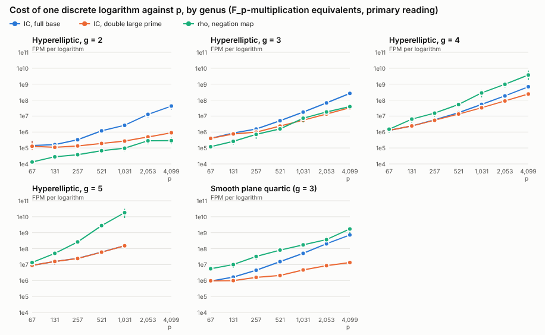
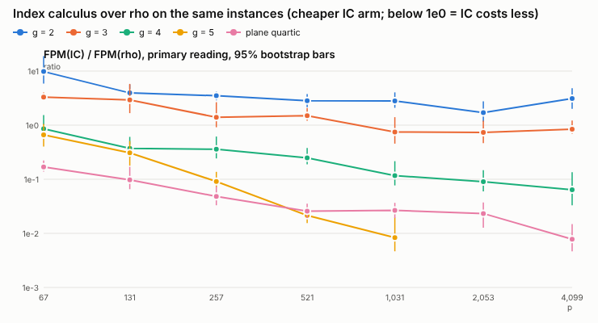

Status: [pcc:unverified]. One session on a shared 4-vCPU
container, no isolation, no independent replay, no signed pcc claim.
Nothing here is a row of the IC leaderboard or of
benchmarks/README.md (validation gate). Synthetic random
curves; no statement about any deployed curve. Protocol: PROTOCOL.md, frozen in commit
6e937a2a60 before any grid datum
(frozen.sha256, binary.sha256). Data:
part_a.jsonl, part_b.jsonl (raw, one JSON
object per run), analysis.json
(genus_ladder_analyze), tables.md (every cell),
data.sha256.
src/cryptanalysis/genus_ladder.rs: one counted
instrument for imaginary hyperelliptic Jacobians of genus 2 to 5 over
F_p (p < 2^31): Cantor arithmetic with a
tally of the F_p multiplications and inversions behind
every group operation, exact #J, full-base and
double-large-prime index calculus on the linear algebra of the genus-3
positive control, the lab’s negation-map rho, and a discriminant-parity
smoothness prefilter.src/cryptanalysis/quartic_ladder.rs: the discrete
logarithm in Pic^0 of a generic smooth plane quartic (genus
3, not hyperelliptic): Diem’s line relations (full base and double large
prime) and rho, on plane_quartic_pic.src/bin/genus_ladder.rs (grid driver, JSONL) and
src/bin/genus_ladder_analyze.rs (cell means, hierarchical
bootstrap, band verdicts, exponent fits).H64Curve divisor for
divisor (g = 2, 3); group axioms (g = 2..5); #J against a
brute-force zeta function (g = 2, 3, 4) and the brute-force order
annihilating random divisors (g = 4, 5); prefilter exactness; every arm
certifying; the quartic conventions (kappa,
decompositions), its order against an independent count, and its arms
end to end.1,809 runs, all certified ([t]G = T
twice, t equal to the planted value): 7 primes (67 to 4099;
genus 5 to 1031), 4 admitted curves per cell (#J = h r,
h <= 8), 3 solver seeds, arms A, a, C, c, R and the
three quartic arms. Three rho runs were skipped by the frozen cap (genus
5, p = 1031, the curve with the largest r).
Wall clock 1,318 s + 399 s on four workers (indicative only).

Cost of one logarithm in F_p-multiplication
equivalents (primary reading:
cantor_mul + 10 inv + rel_mul + g^2 la_mul), same y scale
in every panel. Bars are 95% bootstrap intervals (curves, then
runs).

The cheaper index-calculus arm over rho on the same instances.
Mean cost at p = 1031 (FPM, primary reading; 95%
interval):
| curve kind | group size ln r |
best IC arm | rho (negation) | IC / rho |
|---|---|---|---|---|
| hyperelliptic g = 2 | 12.3 | 2.74e5 (C+pre) | 9.74e4 | 2.82 [2.09, 4.03] |
| hyperelliptic g = 3 | 20.1 | 5.50e6 (C+pre) | 7.32e6 | 0.75 [0.46, 1.40] |
| hyperelliptic g = 4 | 26.9 | 3.32e7 (C+pre) | 2.84e8 | 0.117 [0.077, 0.216] |
| hyperelliptic g = 5 | 33.6 | 1.50e8 (C+pre) | 1.80e10 (3 curves) | 0.0084 [0.0047, 0.020] |
| plane quartic g = 3 | 19.5 | 4.58e6 (2LP) | 1.72e8 | 0.027 [0.019, 0.037] |
Each extra unit of genus multiplies the group by about p
and rho’s cost by about sqrt(p) times the dearer group law
(90, 219, 393, 693 field multiplications per Cantor step at genus 2, 3,
4, 5), while the index calculus grows by a factor 4 to 20. Fitted
exponents in p (FPM primary; 7 primes, 5 at genus 5):
| rho | IC full base | IC double large prime | theory: rho / 2LP | |
|---|---|---|---|---|
| g = 2 | 0.77 [0.66, 0.87] | 1.45 [1.33, 1.57] | 0.50 [0.37, 0.59] | 1 / 1 |
| g = 3 | 1.47 [1.37, 1.55] | 1.59 [1.56, 1.63] | 1.08 [1.04, 1.11] | 1.5 / 1.33 |
| g = 4 | 1.90 [1.74, 2.05] | 1.55 [1.53, 1.56] | 1.29 [1.27, 1.30] | 2 / 1.5 |
| g = 5 | 2.69 [2.42, 2.92] | 1.03 [0.94, 1.13] | 1.02 [0.93, 1.12] | 2.5 / 1.6 |
| quartic | 1.36 [1.24, 1.46] | 1.67 [1.64, 1.70] | 0.69 [0.63, 0.76] | 1.5 / 1 |
The measured exponents sit below the asymptotic ones wherever a constant set-up (walk jump table, distinguished points, the quartic’s decomposition rows) is still a large share of the cost: genus 2 everywhere, genus 5 and the quartic 2LP arm at these sizes. They are fits over the stated primes, not asymptotic statements.
Band verdicts against rho (T3 of tables.md):
p <= 131 and unresolved from 257 (ratio 0.75 to 0.85 for
arm c from p = 1031, intervals include 1); genus 4 below
from p = 131; genus 5 below from p = 131;
quartic below at every prime.w = 0, 0.1, 1 per native
multiplication, AGENTS.md 5a): no cell is below rho across the whole
band. At w = 0 genus 3, 4, 5 and the quartics are far
below; at w = 1 they are above or unresolved, because one
relation trial drags hundreds of native multiplications (smoothness
test, roots) and the band prices each like a whole Cantor step. Genus 5
at p = 1031: 0.0030, 0.090, 0.48 [0.27, 1.14].At p = 4099 the best arm on a random plane quartic costs
1.33e7 FPM [1.04e7, 1.73e7] against 3.32e7 [3.26e7, 3.38e7] on a random
genus-3 hyperelliptic curve, and the fitted exponents are 0.69 against
1.08. The quartic’s rho is 44 times dearer than the hyperelliptic rho at
the same prime (about 8,900 field multiplications per Pic
addition against 219 per Cantor step), which is why its IC/rho ratio is
so small; the comparison that matters for an attacker is IC against IC.
The two populations are independent random samples: these are not the
same logarithm problems.
Census of 2,000 random squarefree genus-3 curves
y^2 = f(x), deg f = 7, per prime (Propositions
2 and 4, smith_prop24::analyze_curve):
| p | 67 | 131 | 257 | 521 | 1031 | 2053 | 4099 |
|---|---|---|---|---|---|---|---|
full_success |
331 | 334 | 327 | 328 | 347 | 338 | 359 |
| share | 0.166 | 0.167 | 0.164 | 0.164 | 0.174 | 0.169 | 0.180 |
Pooled 2,364 / 14,000 = 0.169 (Wilson 95%: 0.163 to 0.175). That is inside the predicted range and below Smith’s 0.1857; these models all have a rational Weierstrass point at infinity, which changes the mix of Frobenius cycle types (reading not checked here).
Among the 28 admitted genus-3 instances (near-prime
order, h <= 8) only 1 passes (p = 521, seed 5,
h = 4), against about 4.7 expected at 0.169: a binomial
tail of about 0.04. One sample of 28 and a post-hoc look, so this is a
lead, not a finding: near-prime Jacobians may pass Smith’s conditions
less often than random ones. The census needed to test it is cheap
(condition on the 2-part of #J).
What a Smith-positive curve gains is finding 2: its logarithm moves
to a plane quartic, 2.5 times cheaper at p = 4099 in this
instrument with a lower exponent. That sentence joins two measurements
by a model. The explicit isogeny is not built in this repository, so no
logarithm was carried across.
The share of walk elements whose u splits is not
1/g! but C(n_x, g) 2^g / #J, with
n_x the number of abscissae carrying two rational points.
Observed over model, pooled per cell, is 0.967 to 1.020 in all 18 cells
with p >= 257. The spread of the model across curves of
one genus widens with the genus: standard deviation of
ln(model x g!) 0.07, 0.14, 0.19, 0.38 at genus 2, 3, 4, 5
(range 0.31 to 1.12 of 1/g! at genus 5). Since the base
also has n_x columns, trials per logarithm scale as
n_x^{1-g}: at genus 5 a curve with 5% more points needs
about 18% fewer trials. Two instances of the same genus over the same
field can differ in index-calculus cost by a factor 2 or more for this
reason alone, and the factor is predictable from N_1.
624 of 624 paired runs have identical trials, candidates, splits,
relations, group operations, Cantor field work and linear algebra; only
the relation phase’s native multiplications change. Mean ratio on/off of
rel_mul per cell: 0.60 to 0.65 (genus 2), 0.72 to 0.76
(genus 3), 0.63 to 0.70 (genus 4), 0.61 to 0.67 (genus 5). On the whole
logarithm it is worth 1% to 9% in FPM (primary) and 3% to 35% at
w = 0.1 GAE, largest at genus 5, because the linear algebra
(priced at g^2 per multiplication modulo r)
and the Cantor arithmetic are the larger shares in FPM. An improvement
of a component of the index-calculus baseline, small on the total;
unverified until replayed.
| id | outcome |
|---|---|
H1 rho exponent g/2 +- 0.2 |
failed at genus 2 (0.77 [0.66, 0.87]: set-up and
distinguished-point overhead at r < 2^24); held at genus
3 (1.47), 4 (1.89); genus 5 2.68 [2.42, 2.91] overlaps the range |
| H2 full-base trials exponent in [0.8, 1.25] | not falsified, but the point estimates at genus 2 (0.71 [0.52, 0.99]) and 5 (0.76 [0.66, 0.88]) are below the range; genus 3 0.85, genus 4 0.92 |
H3 GAE_0(A)/GAE_0(R) falls with the genus |
held at 4 of 5 primes; at 131 genus 5 (0.221) is above genus 4 (0.183), inside the intervals |
| H4 band verdicts | genus 2: held (no IC arm below rho). Genus 4 at 4099, FPM band: held
(0.064 [0.033, 0.135]). Genus 5 at 1031: FPM band held; GAE band
failed (unresolved at w = 1: 0.48 [0.27,
1.14]) |
| H5 split rate model in [0.9, 1.1] per cell | failed in 3 of the 23 cells with at least 500
splits, all at p <= 131: (g, p) = (3, 131)
0.69, (4, 67) 1.14, (5, 131) 1.14; held in every cell with
p >= 257. Widening with genus: held |
| H6 prefilter | held (624/624 identical; ratios 0.595 to 0.761) |
| H7 Smith census share in [0.15, 0.22] | held at all 7 primes |
| H8 quartic IC below quartic rho, FPM band | held at every prime |
| H9 every run certifies | held (1,809 / 1,809) |
The frozen instrument restarts the relation walk every 4096 steps
(inherited from the genus-3 positive control). In a group of order
r a walk meets itself after about
sqrt(pi r / 2) steps and then repeats, so cells with
r below about 2^24 (all of genus 2, genus 3 at
p <= 257) can waste trials. After seeing the data, the
driver got --restart-sqrt
(min(4096, max(16, sqrt(r)/2))). The rebuilt binary
reproduces the frozen rows exactly without the flag
(repro.jsonl: 240 rows, 0 mismatches). With it
(amend1.jsonl, genus 2 and 3, same instances and seeds, 840
runs, all certified):
Source note: the amendment (the restart parameter and
flag), three clippy fixes and a rustfmt pass were applied
after the grid, so genus_ladder.rs, the driver and the
analysis binary no longer match frozen.sha256 (the frozen
bytes are commit 6e937a2a60). The final build was checked
against the frozen data: 312 rows of part_a.jsonl (p = 67,
131; genus 2, 3; quartics) rerun with 0 mismatches in any counted field,
and analysis.json regenerated identically.
2^48. Exponents are fits
over 5 to 7 primes.w = 1 whatever the genus; the FPM band depends on
I (inversion) and kappa (modulus size) prices
that are assumptions, bracketed, not measured.quartic_ladder.rs: clippy was not run to completion on
it; its double-large-prime exhausted path is not exercised
by a test.p = 1031: linear algebra (about two thirds at genus 3, half
at genus 5, under kappa = g^2) and the generic Cantor
arithmetic (about a fifth to a third). Tune the base constant and the
elimination before the Wiedemann step; explicit-formula group law for
genus 2, 3.#J (the
lead in finding 3), then the explicit (2,2,2) map so a
logarithm can be carried to the quartic.r to p (h = 1 or 2) and
extend genus 4 and the quartics to p ~ 2^16 on isolated
hosts, with a validator replay, to make rows eligible for the gate.N_1 to pick or predict easy instances (finding 4)
in the factor-base studies.cargo test --release --lib genus_ladder && cargo test --release --lib quartic_ladder
cargo build --release --bin genus_ladder --bin genus_ladder_analyze
# section 6 of PROTOCOL.md, then:
cat part_a.jsonl part_b.jsonl > ladder.jsonl
target/release/genus_ladder_analyze ladder.jsonl analysis.json
python3 render.py analysis.json